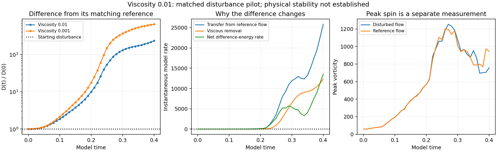

complete: saved through 0.40 of 0.40. 41 paired saved times are available.
A 0.1% low-mode disturbance with seed 202 is compared with the existing undisturbed viscosity 0.01 flow. Grid 128, the initial flow, mean, domain, zero force, Heun method and timestep match. The original 48-job queue is unchanged; its undisturbed run is reused.
The saved difference is larger than at the start: D=0.23379194, giving 233.792 times its starting size. A value below one means this difference has shrunk over the recorded interval. A value above one means it has grown. The prior matched viscosity 0.001 case gives 648.889 at the same time.

D is the L2 velocity difference divided by the initial reference-flow L2 norm. Transfer minus viscous removal gives the instantaneous rate of difference energy. This is different from measuring peak spin in either flow alone.
The raw strain is nonsmooth across periodic joins and initial maxima are outside the central tube. 38 of 41 disturbed-field spatial screens fail. The same grid and timestep remove a comparison mismatch, but do not establish resolution or time convergence. One 0.1% seed is a finite-amplitude, finite-time test; it does not establish infinitesimal or asymptotic stability, an asymptotic Lyapunov exponent, or behavior in a pond.
The original sources are frozen by hashes. Physical-space and Fourier norms are cross-checked, and the difference-energy transfer identity is checked independently. Mean, divergence, finite fields, speed CFL and energy budgets have separate stops. Failed checkpoints and logs are preserved.
Protocol · Saved measurements · Current summary · Initial checks